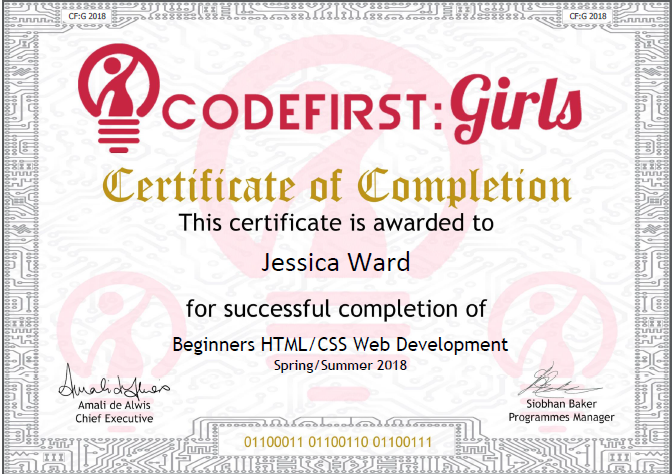

According to the internet it's becoming more and more important as a student in academia to have an online presence, particularly if you want someone to give you a job. I've always been reluctant to get on board with putting my life on the web (it took almost a year for me to be persuaded to join Twitter!) so I decided that if I'm going to do it I'm going to turn it into a learning oppourtunity. My atitude being, if I'm going to have a website I'm going to code it myself.
An accurate representation of my first coding attempts
I've been coding for a couple of years using R for my academic work and last year I made my first presentation in R markdown which required some little html snippets. At the time I was only focussed on getting some slides that were presentable together so I was quite happy just copying and pasting a couple of lines of html code to get the job done without having a clue what any of it actually meant. I remember getting way too excited when I managed to change the colour of some text using CSS despite not having a clue how it worked or being able to replicate my success. Although I think it was pretty flukey I managed to get some decent looking slides put together all whilst thinking "this would have been mucheasier in powerpoint". The experience did however get me thinking, if I wanted to be able to do this kind of thing in future would I just end up going through the same struggle?
I decided it was about time that I learned what on earth was actually going on and so I applied to take part in a coding course for girls and for the last eight weeks I've been spending a couple of hours a week learning HTML, CSS and a little bit of Javascript as part of the Codefirst Girls course. Along with some fabulous (and very patient) instructors as part of a small group of girls here at Newcastle University I have been learning all about web development.
We've learned a lot over the past few weeks and it's been a really enjoyable experience to learn to code in such an open and friendly environment. For most of the girls this was their first foray in to coding (of any kind) but even as a fairly experienced R user learning a new language I felt just as much of a beginner as the rest of the group. It reminded me a bit of my expereince learning other languages (from back during my school days). When you know a bit of french and you start to learn some spanish, you have enough of an idea about the structure of a language to be bable to deceipher the general gist of a sentance even if you don't know all of the vocab. Learning new coding languages has been similar, I understand the structure and the logic behind a lot of the code that we learned but I kept stumbling over the syntax.
This has proved frustrating, as much as I would like to say that every time I try an comment some code with a # or use a comma instead of a semi colon as a separator i've seen it as a learning experience, in actual fact I've just been getting more and more frustrated at myself. Its like when you are searching for a word in Spanish but for the life of you you can only think of its French counterpart. As with anything (including writing a blog) it's all about practice. The more you do it the more it sticks in your head. So by the time I'm done with this website I'm sure I'll be a pro coder...or at the very least I'll be making fewer mistakes